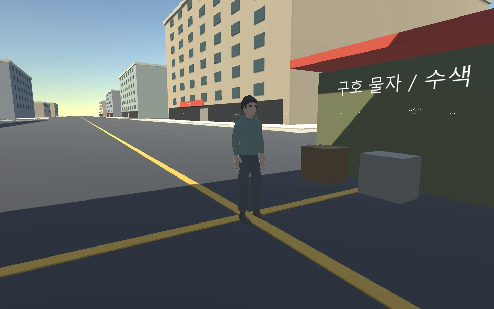
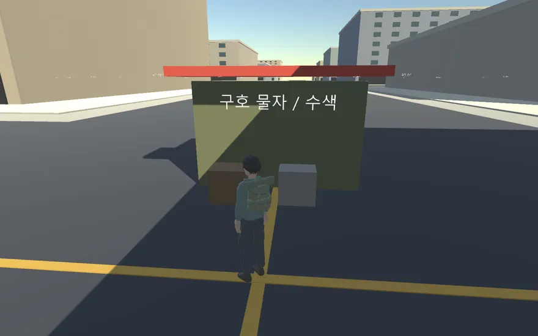
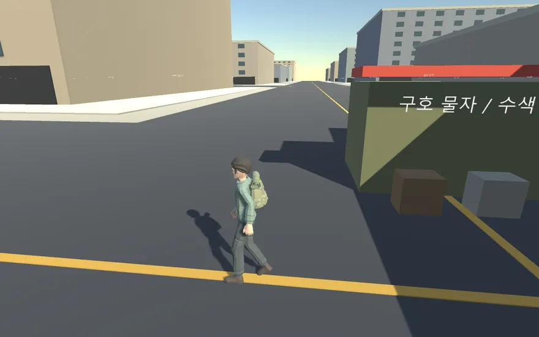

Tracefolio REPORTS & ISSUES
Tracefolio REPORTS & ISSUESBlender 설치와 리깅 생존자·걷기·달리기·수색 애니메이션 적용
완료Blender 5.2.3 LTS 설치·CLI 실행을 확인하고 기본 도형 캐릭터를 교체했습니다. 실제 게임 서버 이동과 4개 모션, 수색 후 아이템 증가를 검증했습니다.
작업 결과
Blender 5.2.3 LTS를 사용자 전용 폴더에 설치하고 Python 배치 제작부터 Unity 6000.0.83f1 게임 적용까지 수행했습니다. 기존 기본 도형 캐릭터를 후드·긴바지·부츠·리깅된 배낭을 갖춘 캐릭터로 교체했습니다. 이 보고서의 완료 범위는 설치·캐릭터/모션 적용과 해당 실행 검증이며 전체 게임 완성이 아닙니다.



변경 내용
적용 내용
공식 Windows ZIP을 공식 SHA-256과 대조해 사용자 프로그램 폴더에 설치하고 시작 메뉴 바로가기와 프로젝트 CLI 래퍼를 추가했습니다. 먼저 시도한 MSI는 Windows 관리자 승인 대기였으므로 작동하는 설치는 검증한 사용자 전용 ZIP 방식입니다. 검증 해시는 723f08a4401502561eb763cdeacf8745b31e5f3f154d287d3830d97cf75dc2fb입니다.
Quaternius Ultimate Modular Men Pack의 CC0 원본을 확인하고 Casual_Hoodie와 Adventurer의 배낭·긴바지·부츠를 조합했습니다. 제작자 라이선스와 원본 FBX, 편집 가능한 art/Survivor.blend, 재현용 Python 스크립트를 보존했습니다. 검토만 한 이전 캐릭터와 실제 적용 원본을 구분해 출처를 기록했습니다. 공식 모델을 처음부터 직접 제작했다고 표현하지 않습니다.
5개 스킨 메시와 네이티브 Generic 리그를 Unity Animator에 연결했습니다. Idle/Walk/Run 속도 블렌딩, 수색 성공 후 Interact 전환을 구현했습니다. 걷기 1.7 m/s와 달리기 4.5 m/s는 서버가 결정하고 클라이언트의 임의 속도 값은 무시합니다. 서버 이동 방향에 따라 로컬·다른 플레이어 캐릭터를 회전시키고 모션 속도를 구동하도록 연결했습니다. 발 접지 구간을 샘플링해 원본 모션의 걷기 1.2716 m/s, 달리기 2.8520 m/s를 측정하고 각각 약 1.3369배·1.5778배 재생으로 보정했습니다. TPS 카메라 거리·재질 색 전달과 보조 조명도 조정했습니다.
검증
설치된 Blender에서 --background --factory-startup --python-exit-code 1로 실제 FBX를 열고 원본 검사·조합·FBX 내보내기·앞뒤 렌더를 수행했습니다. LAST37N_BLENDER_READY 5.2.3 LTS를 확인했습니다.
Unity 배치 빌드 성공, 종료 코드 0. 네 모션의 실제 뼈대 회전 변화와 클립 길이를 검사했습니다. Idle 1.6667초, Walk 1.3333초, Run 0.8초, Interact 1.2667초입니다. 서버 회귀 테스트는 node --test server/test/*.test.ts 실행 결과 10개 통과했습니다.
Windows 게임 실행 파일을 실제 로컬 WebSocket 서버에 연결했습니다. 5개 스킨 메시·79개 참조 뼈대를 확인했고 Idle, Walk, Run, Interact가 각각 실제 Animator에서 활성화됐습니다. 검증 시점 걷기 속도는 약 1.700 m/s, 달리기는 약 4.500 m/s였으며, 수색 성공 후 물이 1개 증가하는 것까지 확인했습니다. 검증 결과 JSON의 passed=true와 LAST37N_CHARACTER_RUNTIME_PASSED를 확인했습니다. 예외 로그는 발견되지 않았습니다.
첨부 이미지는 실행 중인 게임 카메라를 RenderTexture로 캡처한 실제 렌더이며 IMGUI HUD는 제외됩니다. 키보드 입력을 흉내 낸 것으로 보고하지 않으며 검증 스크립트가 실제 서버에 방향 명령을 보냈습니다. 연속 프레임은 실제 파일 저장 간격을 보존한 WebP 애니메이션입니다. 압축 결과: front.webp 47210바이트 (1440×900), walk-animation.webp 201452바이트 (880×550), run-animation.webp 183010바이트 (880×550). 원본 PNG는 로컬 보존하고 압축본의 실제 표시와 글자·모델 식별을 확인했습니다.
남은 사항
현재 캐릭터는 스타일드 저폴리 모델입니다. 실사형 모델·고해상도 피부/의상 텍스처·얼굴 표정·손 물체 맞춤·경사면 Foot IK까지 완성한 결과가 아닙니다. 발 미끄러짐을 줄이기 위한 재생 속도 보정은 했으나 모든 방향 전환·지형에서 무결함을 확인한 것은 아닙니다. 네이티브 Generic 리그로 원본 모션을 유지했으며 Humanoid 재타기팅은 미검증입니다. Blender의 절차적 범프 노드 전체가 Unity Standard에 그대로 재현된 것으로 주장하지 않습니다. 실제 키보드 장시간 조작과 다자 접속의 원격 캐릭터 시각 검증은 별도입니다.
기존 게임의 가상 블록 건물, PostGIS 연결·브라우저 빌드·100명 부하 검증 등 남은 프로젝트 단계도 유지됩니다. 설치된 Blender의 GUI 조작 검증 대신 무창 CLI·실제 렌더·내보내기 파이프라인을 확인했습니다.
작업 시간
- 제안 시간: 작업 시작 시 설치·실행 확인 3
10분, 캐릭터 개선·Unity 적용·게임 검증 추가 3060분 예상으로 안내했습니다. - 실제로 완료된 시간: 시작 2026-10-30 17:35:15 KST (Asia/Seoul). 구현·실제 게임 검증 결과 저장 2026-10-30 18:05:39 KST (Asia/Seoul). 실제 경과 30분 25초. 보고서 생성·중앙 게시 및 배포 확인은 이 시각 이후 별도 수행합니다.
- XERJ: 미사용 — 제공 도구 목록에 XERJ가 없었습니다. rg로 현재 소스·호출 지점을 확인하고 Blender·Unity·서버 실행 결과로 검증했습니다.